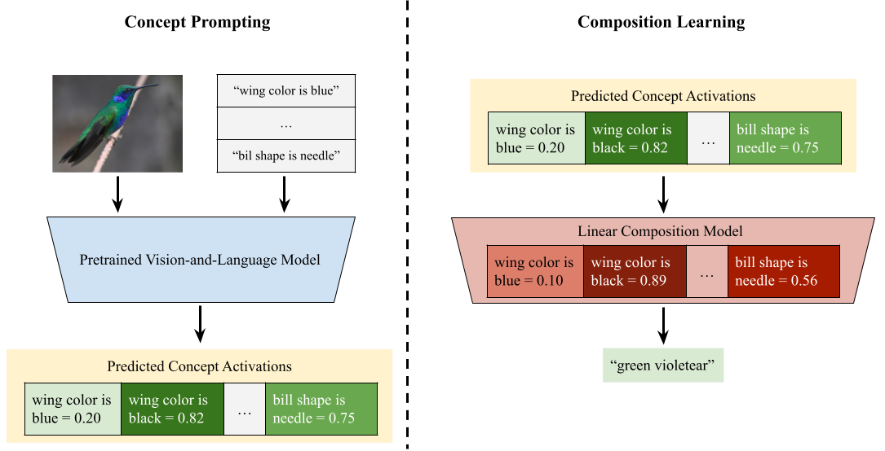

Paper and Supplementary Material

Do Vision-Language Pretrained Models Learn Composable Primitive Concepts?
In TMLR.
|
Brown University |
Brown University |
Brown University |
Brown University |
|
|
|
| Vision-language (VL) pretrained models have achieved impressive performance on multimodal reasoning and zero-shot recognition tasks. Many of these VL models are pretrained on unlabeled image and caption pairs from the internet. In this paper, we study whether representations of primitive concepts–such as colors, shapes, or the attributes of object parts–emerge automatically within these pretrained VL models. We propose a two-step framework, Compositional Concept Mapping (CompMap), to investigate this. CompMap first asks a VL model to generate concept activations with text prompts from a predefined list of primitive concepts, and then learns to construct an explicit composition model that maps the primitive concept activations (e.g. the likelihood of black tail or red wing) to composite concepts (e.g. a red-winged blackbird). We demonstrate that a composition model can be designed as a set operation, and show that a composition model is straightforward for machines to learn from ground truth primitive concepts (as a linear classifier). We thus hypothesize that if primitive concepts indeed emerge in a VL pretrained model, its primitive concept activations can be used to learn a composition model similar to the one designed by experts. We propose a quantitative metric to measure the degree of similarity, and refer to the metric as the interpretability of the VL models’ learned primitive concept representations. We also measure the classification accuracy when using the primitive concept activations and the learned composition model to predict the composite concepts, and refer to it as the usefulness metric. Our study reveals that state-of-the-art VL pretrained models learn primitive concepts that are highly useful for fine-grained visual recognition on the CUB dataset, and compositional generalization tasks on the MIT-States dataset. However, we observe that the learned composition models have low interpretability in our qualitative analyses. Our results reveal the limitations of existing VL models, and the necessity of pretraining objectives that encourage the acquisition of primitive concepts. |
|  |
|
| We propose a two-step framework, Compositional Concept Mapping (CompMap). In "Concept Prompting" module, a pretrained vision-and-language (VL) model is used to generate concept activations from images and a set of concepts, where each concept is represented by one or a few text prompts. In "Composition Learning" module, a linear composition model is trained on concept activations (either predicted by a pretrained VL model or annotated by human experts) to predict the composite concepts (e.g. green violetear). We use composition models as a proxy to understand how well pretrained VL models learn primitive concepts. |
|
Tian Yun, Usha BHalla, Ellie Pavlick, Chen Sun. Do Vision-Language Pretrained Models Learn Composable Primitive Concepts? In TMLR. |
AcknowledgementsThis template was originally made by Phillip Isola and Richard Zhang for a colorful ECCV project; the code can be found here. |